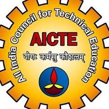
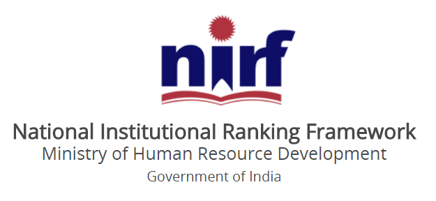
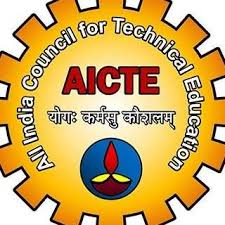
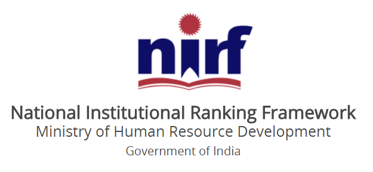
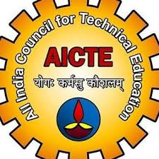
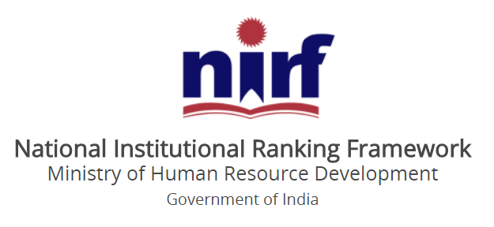
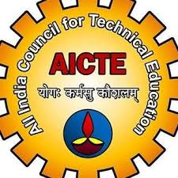
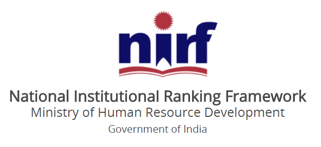
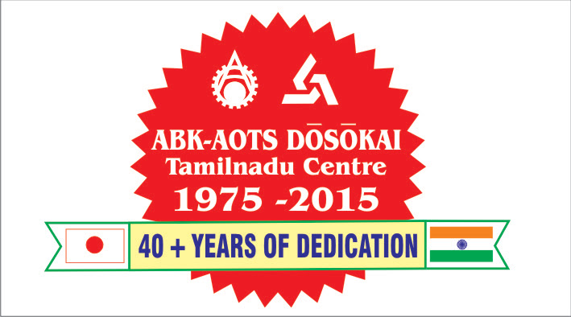
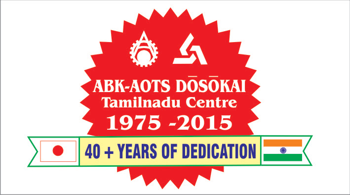

2.-------facilities provided

 

E.G.S. Pillay Engineering College, located in Nagapattinam, Tamil Nadu, was established in 1995. It was founded by the G.S. Pillay & Sons Charitable and Educational Trust and initially offered three courses: Computer Science Engineering (CSE), Mechanical Engineering, and Chemical Engineering. The college was affiliated with Bharathidasan University at first and later became affiliated with Anna University, Chennai, in 2002. Over the years, it has gained recognition, including UGC approval under 2(f) and 12(B) and accreditation for multiple programs. It has also been recognized as a research center for various engineering disciplines.
| COURSE | FEES |
|---|---|
| UG | 55000 |
| PG | 68000 |
| DOCTORATE | 70000 |